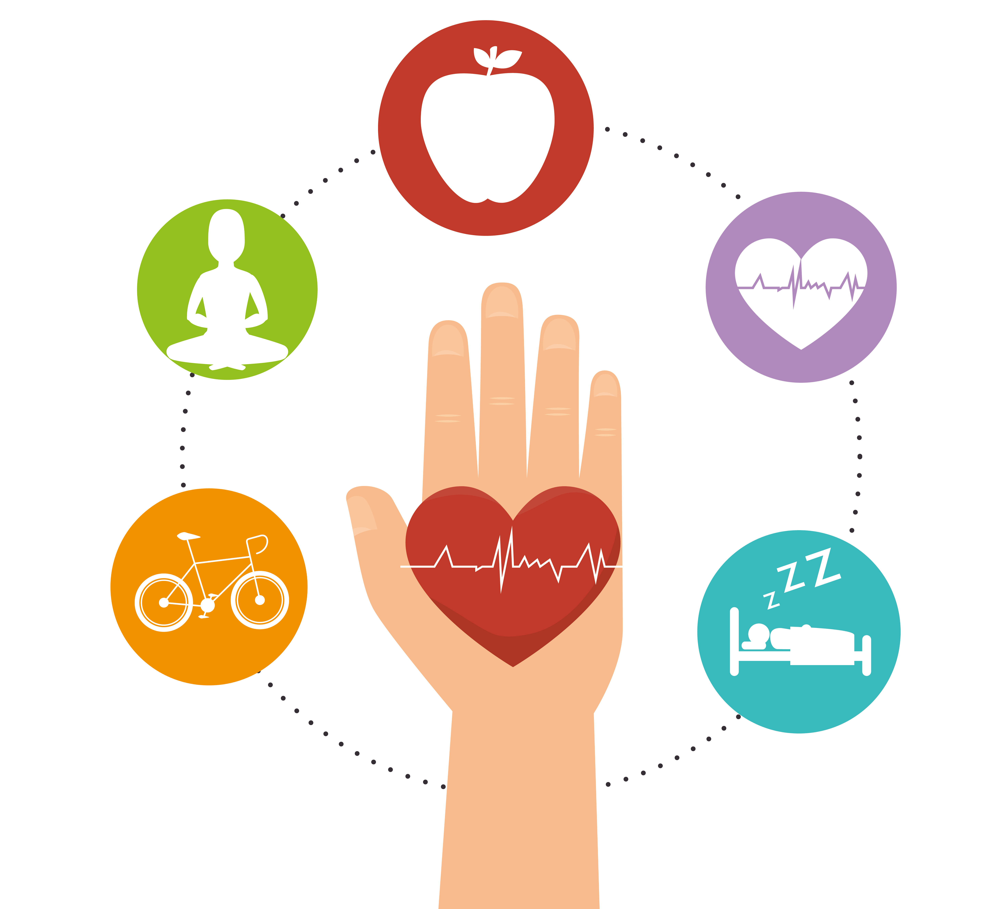

DICAS IMPORTANTE
São vários os estudos que atestam a importância do exercício físico regular e bem orientado para prevenção e tratamento de várias doenças e, é claro, na melhora da qualidade de vida. Então, como iniciar um programa de exercícios físicos?
1. Faça uma avaliação médica:
Principalmente se você tem mais de 35 anos ou, mesmo sendo mais jovem, se tem algum antecedente pessoal ou familiar de doença cardíaca, diabetes e problemas ósseos e articulares.
2. Providencie os exames
Solicitados pelo seu médico. Assim ele poderá identificar algum problema em fase inicial evitando seu agravamento.
3. Escolha um exercício que lhe agrade. Não vai adiantar, por exemplo, ir para uma academia se você prefere atividades ao ar livre. 4. Use os equipamentos adequados para a modalidade escolhida. Ciclistas devem usar capacetes e luzes de advertência nas bicicletas; para caminhadas ou corrida, roupas leves e tênis com bom amortecimento de impacto; musculação, luvas para evitar bolhas e calos nas mãos e assim por diante. 5. Programe suas sessões de exercícios para a maioria dos dias da semana e em horários com temperatura agradável. No mínimo 3 dias alternados. Se os exercícios forem intensos e diários, um dia na semana é para o descanso obrigatório. 6. Ouça seu corpo. É esperado que após longo tempo parado você sinta algumas dores. Porém, se elas forem persistentes é sinal de que a carga ou execução dos exercícios está inadequada. 7. Se alimente cerca de 30 a 40 minutos antes e até uma hora após os treinos. Ao contrário do que muitos imaginam, se exercitar em jejum e não comer após a atividade acaba queimando massa muscular e não a gordura corporal. 8. Hidrate seu corpo. Devem ser consumidos entre 300 e 500mL de água até 30 minutos antes da atividade e mais 200mL a cada 30 minutos. Em exercícios que durem mais de uma hora e que causem grande produção de suor vale a pena usar uma bebida isotônica. Verifique seu peso antes e depois dos exercícios. Se ele diminuiu você vai precisar repor com líquidos. 9. Faça exercícios de alongamento e flexibilidade antes e principalmente após os treinos. Isso é importante para evitar encurtamentos musculares e problemas nas articulações. 10. Se você é do tipo que não gosta de ficar sozinho, mesmo durante sua atividade física, convide um amigo ou parente para lhe acompanhar. Pode ser que vocês descubram mais um motivo para estarem juntos dividindo as alegrias de uma vida mais saudável e prazerosa. Dr. Jomar Souza é especialista em Medicina do Exercício e do Esporte e Diretor da Sociedade Brasileira de Medicina do Exercício e do Esporte SBME